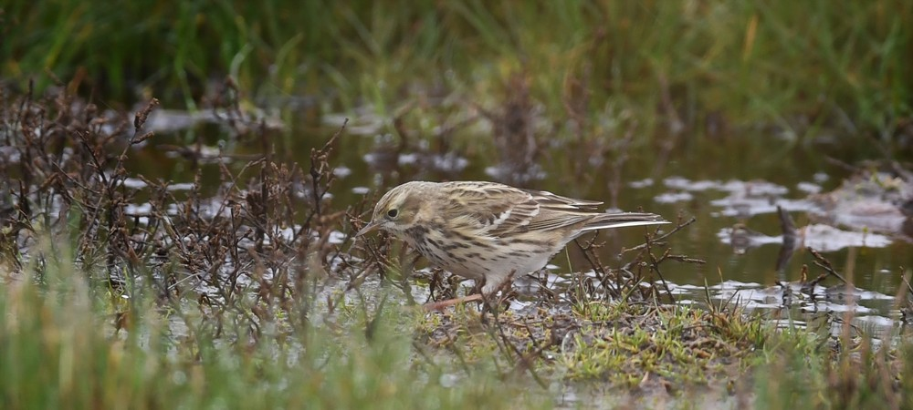
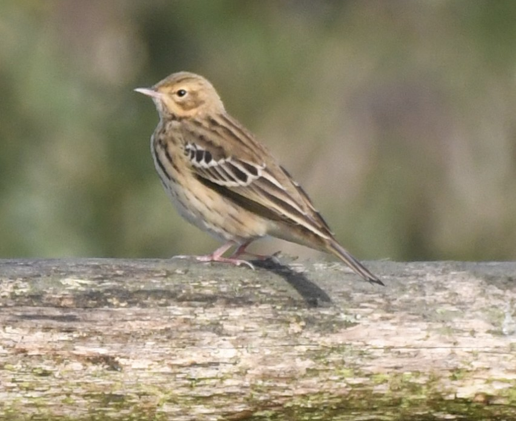

Piepers
De meest algemene piepers in Nederland zijn de waterpieper (wintergast), oeverpieper (wintergast), boompieper (zomergast) en graspieper (standvogel). De meeste andere piepers zijn dwaalgasten.
Onderscheidende kenmerken van piepers
Winter
In de winter zijn de meest voorkomende piepers de graspieper, de oeverpieper en de waterpieper. Let op de streping op de rug, de streping op de borst en flank en de kleur van de poten
De graspieper heeft vrij duidelijk afgetekende strepen op de borst en flank en lichte poten. Vergeleken met de waterpieper heeft de graspieper meer streping op de rug.
De waterpieper heeft in de winter een lichte buikt en vage strepen op de buik en flank. De rug is grijs-achtig en ongestreept en de poten zijn donker. Vaak duidelijke oogstreep, ontbreekt bij oeverpieper
De oeverpieper lijkt veel op de waterpieper maar heeft i.t.t. de waterpieper meer streping op de rug en heeft meer strepen op de buik (wel diffuus) en lijkt daardoor vrij donker. De oeverpieper komt vooral voor aan de kust.
Zomer
De graspieper heeft vrij duidelijk afgetekende strepen op de borst en flank en lichte poten. Ook duidelijke strepen op de rug. Juveniele graspiepers hebben geen strepen op de flanken.

Foto: Henri Hamer
De boompieper lijkt op de graspieper. Heeft net als graspieper lichtkleurige poten en verder op basis van verenkleed lastig van graspieper te onderscheiden. De flankstrepen van een boompieper zijn dunner en fijner dan die van de graspieper, waar op foto’s graspiepers duidelijk zichtbare strepen hebben tussen borst en poten zijn bij de boompieper deze strepen veel vager of bijna niet te zien. Meest duidelijk is het verschil in de zang en de habitat.

Foto: Marco Blanker
De waterpieper is in broedkleed (in voorjaar voor trek naar broedgebieden) goed te herkennen aan grijze rug en roze borst, met duidelijke wenkbrouwstreep.
De oeverpieper lijkt veel op de waterpieper maar heeft i.t.t. de waterpieper meer streping op de rug en heeft meer strepen op de buik (wel diffuus) en lijkt daardoor vrij donker.
Roep en zang
geluiden omschrijven